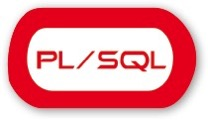

Proyecto Final de Grado Superior
Desarrollo de Aplicaciones Web
Alumno:Christian Begines Carrasco
VIR
"Vehicle Insurance Report"
Your safety is ours!
Índice:
- ¿Que es VIR?
- Idea de negocio
- Composicion
- Funcionalidad
- Herramientas y tecnologías
- Metodología de trabajo
- Propuestas de mejora
- Mejoras sobre funcionalidad
- Mejoras sobre al código
¿Qué es VIR?
Idea de negocio
Contratacion de seguros
No mas papeles
Proporcionar seguridad al cliente y a la aseguradora
Composicion
Aplicación movil
Consume servicios expuestos
Añade, Edita , Consulta los contratos
Funcionalidad
Contratacion de seguros para comerciales
Login
Menu Principal
Nuevo Registro
Datos asegurador
Datos del cliente
Datos del vehículo
Pantalla de Sketch
Pantalla de imagenes
Datos del seguro
Historial del vehiculo
Historial de busqueda
Podemos buscar por filtro
Si el estado del seguro nos lo permite podremos acceder a editarlo
Utilizando las pantallas anteriores pero con sus datos correspondientes
Por ultimo tendriamos el manual de usuario
La guia perfecta para manejar esta aplicaión
Herramientas y Tecnologias
Herramienta de desarrollo
Xamarin.Android
Api para desarrollar Android en C#

IDE para el desarrollo
Visual Studio 2017
Base de datos
Oracle
Con interfaz de desarrollo PL/SQL
Framework de control de versiones
Team Foundation Server
Gran compatibilidad con Visual Studio

Metodología de trabajo
Metodología Scrum No
Metodología cercana a SCRUM Si
- Reparto del trabajo
- Priorizar objetivos
- Sprints cada cierto tiempo
Si se hizo como SCRUM
- Puntacion del trabajo
- Control del tiempo
- Puntuacion en las tareas
No se hizo como Scrum
Valoracion Personal
Responsabilidades
Resolutividad
Independencia
Satisfacción
Propuestas de mejora
Mejoras sobre la funcionalidad
Añadir opciones para el cliente, como acceso a sus datos
Chat para asegurados siendo cliente
Carga de vistas desde servidor para reducir recursos
Mejoras sobre el codigo
Utilizar Android Nativo